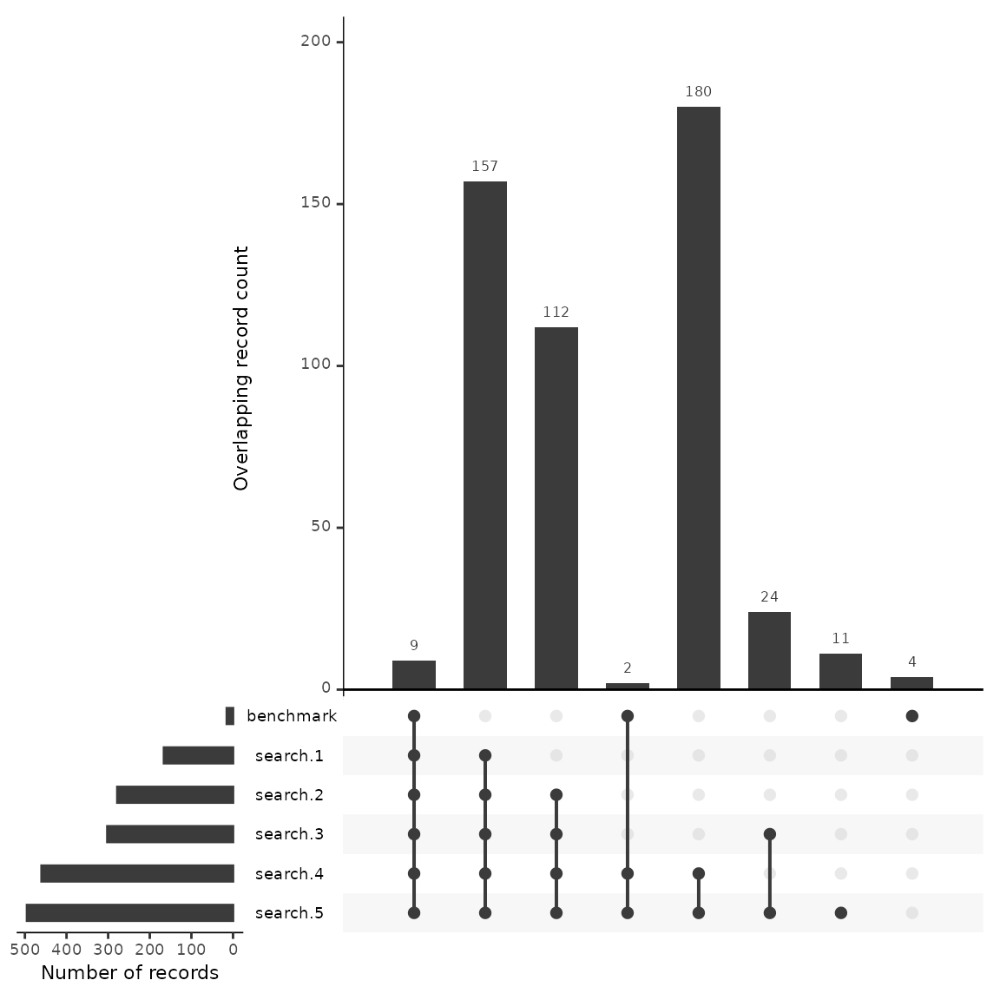

New Benchmark Testing
2025-05-12
Source:vignettes/citesource_new_benchmark_testing.Rmd
citesource_new_benchmark_testing.RmdAbout this vignette
When estimating the comprehensiveness of a search, researchers often compile a list of relevant studies and evaluate whether or not they are found using their search strategy. While benchmarking is an important step in testing the sensitivity of a search, this process can be time consuming if variations of a string are being tested.
This vignette will provide an example of how CiteSource can be used to speed up the process of benchmarking especially when comparing variations of search strings or search strategies.
1. Install and loading CiteSource
Use the following code to install CiteSource. Currently, CiteSource lives on GitHub, so you may need to first install the remotes package.
#Install the remotes packages to enable installation from GitHub
#install.packages("remotes")
#library(remotes)
#Install CiteSource
#remotes::install_github("ESHackathon/CiteSource")
#Load the CiteSource
library(CiteSource)2. Import citation files
Users can import multiple .ris or .bib files into CiteSource, which the user can label with source information such as database or platform. In this case we are uploading the results from five different strings, which were run in Web of Science.
# Import citation files from a folder
file_path <- "../vignettes/new_benchmark_data/"
citation_files <- list.files(path = file_path, pattern = "\\.ris", full.names = TRUE)
# Print citation_files to double check the order in which R imported the files.
citation_files
#> [1] "../vignettes/new_benchmark_data//benchmark_15.ris"
#> [2] "../vignettes/new_benchmark_data//search1_166.ris"
#> [3] "../vignettes/new_benchmark_data//search2_278.ris"
#> [4] "../vignettes/new_benchmark_data//search3_302.ris"
#> [5] "../vignettes/new_benchmark_data//search4_460.ris"
#> [6] "../vignettes/new_benchmark_data//search5_495.ris"3. Assign custom metadata
In this example the benchmark file takes an NA for cite_source while the search files are tagged with search 1, search 2, etc. The cite_label for these files is tagged as search, while the benchmark is used for the benchmark files. In further vignettes you will see how the label can be used for post screening and citations that were included in the final synthesis.
# Create a tibble that contains metadata about the citation files
imported_tbl <- tibble::tribble(
~files, ~cite_sources, ~cite_labels,
"benchmark_15.ris", "benchmark", "search",
"search1_166.ris", "search 1", "search",
"search2_278.ris", "search 2", "search",
"search3_302.ris", "search 3", "search",
"search4_460.ris", "search 4", "search",
"search5_495.ris", "search 5", "search"
) %>%
# Append the file path to each file name in the 'files' column
dplyr::mutate(files = paste0(file_path, files))
# Save the imported citations as raw_citations
raw_citations <- read_citations(metadata = imported_tbl, verbose = FALSE)
#> Importing files ■■■ 5%4. Deduplicate & create data tables
CiteSource allows users to merge duplicates while maintaining information in the cite_source metadata field. Thus, information about the origin of the records is not lost in the deduplication process. The next few steps produce the dataframes that are used in subsequent plots and tables.
#Deduplicating yields a dataframe. Each record has a duplicate_id which is unique,
#citations that were duplicated will retain each duplicate_id in the record_ids column.
#source and label tags from each duplicate will be merged as a list in their respective columns.
unique_citations <- dedup_citations(raw_citations)
#> Registered S3 method overwritten by 'synthesisr':
#> method from
#> as.data.frame.bibliography CiteSource
#> formatting data...
#> identifying potential duplicates...
#> identified duplicates!
#> flagging potential pairs for manual dedup...
#> Joining with `by = join_by(duplicate_id.x, duplicate_id.y)`
#> 1716 citations loaded...
#> 1217 duplicate citations removed...
#> 499 unique citations remaining!
#Count_unique yields another dataframe which is used in creation of plots and tables
n_unique <- count_unique(unique_citations)
#For each unique citation, determine which sources were present
source_comparison <- compare_sources(unique_citations, comp_type = "sources")5. Review internal duplication
Once we have imported, added custom metadata, and identified duplicates, it can be helpful to review the initial record count data to ensure everything looks okay. As a part of the deduplication process, duplicate records may have been identified within sources. The initial record table will provide you with a count of how many records were initially in each source file, and the count of distinct records that will vary if there were any duplicates identified within the source file.
#Initial upload/post internal deduplication table creation
initial_records_search <- calculate_initial_records(unique_citations)
initial_record_table_search <- create_initial_record_table(initial_records_search)
initial_record_table_search| Record Counts | ||
| Records Imported1 | Distinct Records2 | |
|---|---|---|
| benchmark | 15 | 15 |
| search 1 | 166 | 166 |
| search 2 | 278 | 278 |
| search 3 | 302 | 302 |
| search 4 | 460 | 460 |
| search 5 | 495 | 495 |
| Total | 1716 | 1716 |
| 1 Number of records imported from each source. | ||
| 2 Number of records after internal source deduplication. | ||
6. Compare overlapp with an upset plot
An upset plot is useful for visualizing overlap across multiple sources and provides detail about the number of shared and unique records. Using this data we’ll outline a few potential uses when benchmarking testing a search.
We have uploaded 15 benchmarking articles. Of these 15 articles, the upset plot shows us that all but 4 were found across the five searches. We can see the number of benchmarking articles that were discovered by each string as well as the number of articles that were shared between searches.
#Generate a source comparison upset plot.
plot_source_overlap_upset(source_comparison, decreasing = c(TRUE, TRUE))
#> Plotting a large number of groups. Consider reducing nset or sub-setting the data.
Looking at the first column, we see that 9 benchmarking articles were found across every search. One may hypothesize that the 157 citations that follow in the second column may have a high number of relevant articles due to the fact that they were also discovered across the five searches. If a researcher was interested in building a larger group of benchmarking articles, they may want to review these articles first.
Looking at the plot we can see that search #4 and #5 have the largest number of results, at close to 500 each. Of these, 180 are unique to those two searches. We can also see that search #4 and #5 found two of the benchmarking articles that would not have been found otherwise. While a researcher may want to ensure that they capture the highest number of benchmarking articles, the addition of close to 200 articles more than search #2 and #3 may not be efficient when the result is only 2 benchmarking articles. Instead of including this search in their final strategy, they may consider reviewing the two articles that were found by this search and work to adjust their other searches instead.
Another decision in this case may be to drop search #2 and #3 as each of these strings do not contribute uniquely to the discovery of any benchmarking articles. While the data backs up this decision, there may also be more to consider. For example, if benchmarking articles are biased for any known reason, certain search strategies may be employed with an understanding that benchmarking data may not accurately reflect their potential contribution. (e.g. benchmarking articles were gathered from previous systematic reviews that focused on a specific geographic region and the current review is global in nature).
Finally, as we’ll see in the next step, we can examine closely the four articles that weren’t found in any search approach. This will help us adjust our search to better capture relevant studies.
7. Compare overlapp with a record level table
This record table is helpful in reviewing which citations were found across each database as well as quickly checking to see which benchmarking articles were not found in the search.
unique_citations %>%
dplyr::filter(stringr::str_detect(cite_source, "benchmark")) %>%
record_level_table(return = "DT")8. Exporting for further analysis
We may want to export the deduplicated set of results for further
analysis. CiteSource offers a set of export functions called
export_csv, export_ris and
export_bib that will save dataframes as a .csv file, .ris
file or .bib file, respectively.
You can then reimport .csv and .ris files to pick up a project or analysis without having to start from scratch, or after making manual adjustments (such as adding missing abstract data) to a file.
Generate a .csv file
The separate argument can be used to create separate columns for cite_source, cite_label or cite_string to facilitate analysis. CSV files can be reimported into CiteSource in order to recreate all plots and tables.
#export_csv(unique_citations, filename = "citesource_export.csv")Generate a .ris file
Generate and .ris and indicate custom field location for cite_source, cite_label or cite_string. In this example, we’ll be using EndNote, so we put cite_sources in the DB field, which will appear as the “Name of Database” field in EndNote and cite_labels into C5, which will appear as the “Custom 5” metadata field in EndNote.
#export_ris(unique_citations, filename = "citesource_export.ris", source_field = "DB", label_field = "C5")Generate a bibtex file
Generate a bibtex file and include data from cite_source, cite_label or cite_string.
#export_bib(unique_citations, filename = "citesource_export.bib", include = c("sources", "labels", "strings"))Re-importing CiteSource a CiteSource exported file
In order to reimport a .csv or a .ris you can use the following. Here is an example of how you would re-import the file if it were on your desktop.
When reimporting you can simply name the data ‘unique_citations’ as this is the primary dataframe that all other functions use. See the following example.
#reimpor the citaitons and name 'unique_citations'
#unique_citations <-reimport_csv("citesource_export.csv")
#create other datasets required for visualizations
#n_unique <- count_unique(unique_citations)
#source_comparison <- compare_sources(unique_citations, comp_type = "sources")
#citesource_working_example <-reimport_ris("citesource_export.ris")